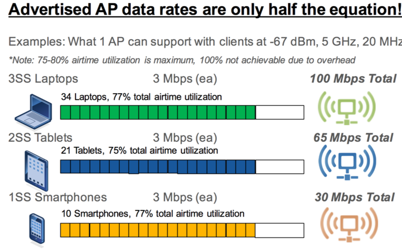
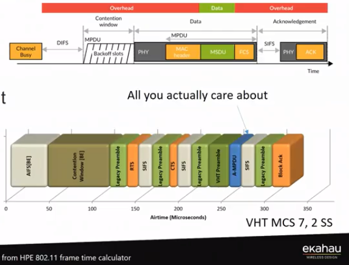
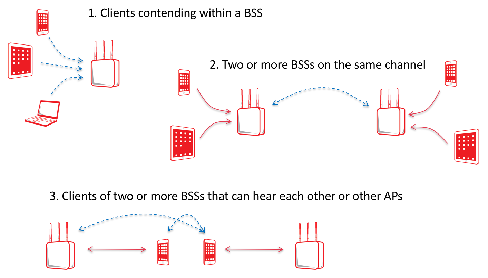
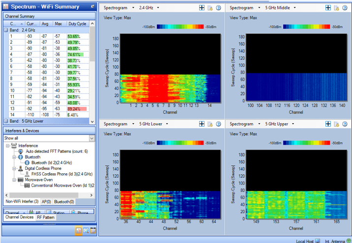
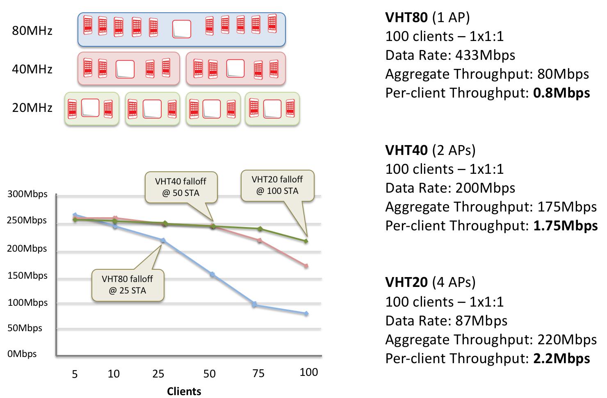
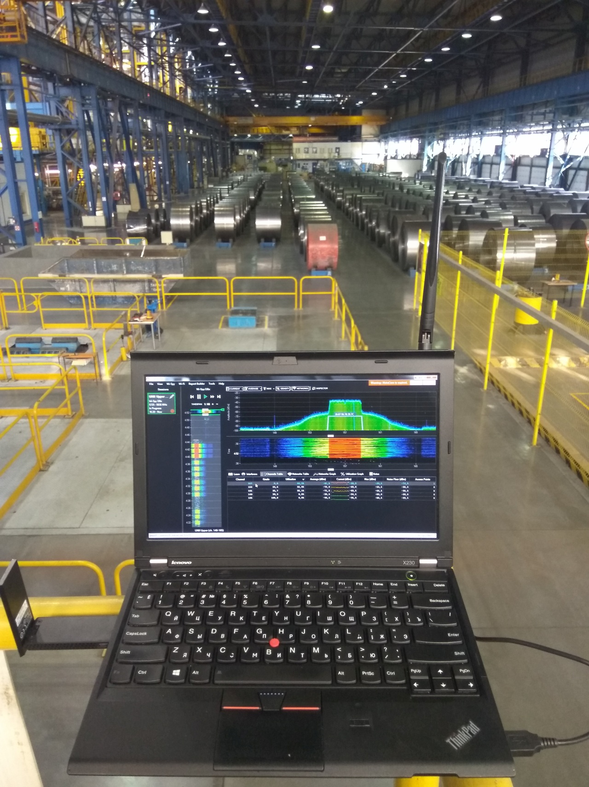
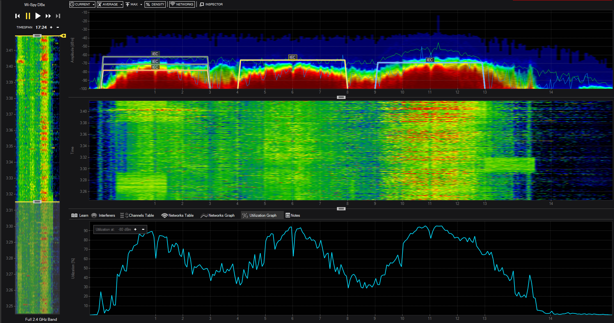
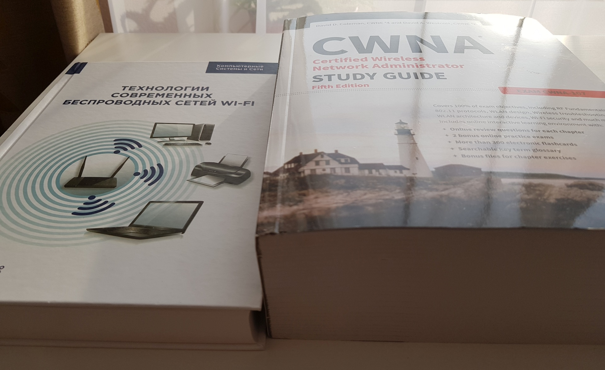

Реальная скорость Wi-Fi (на предприятиях)
http://divdyn.com/wi-fi-throughput/
Непрекращающийся хайп вокруг гигабитных скоростей Wi-Fi современных стандартов провоцирует инженеров прояснять эту тему понятным для всех образом.
Что пытаются натянуть за уши маркетологи? Что говорят инженеры? Где же истина?
Как всегда, где-то рядом. Какой пропускной способности ожидать в реальных условиях и почему – вы найдете ответ в этой статье. Если совсем нет времени читать, а хочется знать волшебную цифру – 75 Мбит/c на двухдиапазонную точку доступа, на всех. Кому интересны детали, читайте дальше.
Статья написана на базе материала Wi-Fi Throughput от Devin Akin, который больше 20 лет в теме беспроводных сетей а также со-основатель образовательной программы CWNP (он же CWNE #1).
Я просто спросил его, можно ли перевести его статью, и он тут же ответил: “да, я буду в восторге”.
Чего ждать от 20 МГц?
Сначала нужно понять, чего можно ждать от канала шириной 20 МГц при стандартном ассортименте клиентских устройств. Вдруг кто не знает, SS (Spatial Stream) это Пространственный Поток (ПП). Понятние из технологии пространственного мультиплексирования или MIMO, которая появилась еще в 802.11n и уже почти как 10 лет радует повышенной скоростью за счет одновременной передачи нескольких ПП одновременно. Очень хорошая статья на тему MIMO написана Андреем Кузнецовым, спасибо ему за понятный язык.
Для работы с несколькими ПП точке доступа или клиенту нужно иметь на борту несколько приёмо-передатчиков с антеннами (об их числе говорят первые две цифры в характеристиках, например 2×2:2), со всеми энергетическими накладными расходами.
Ниже отличная графика от Andrew Von Nagy.

На этом рисунке, со всеми клиентами 1×1:1, каждый из которых передает поток 3 Мбит/c, эфирное время (airtime) чистого 20 МГц канала насыщается. При утилизации канала порядка 75-80% происходит полное насыщение. В результате суммарная пропускная способность канала равна примерно 30 Мбит/c или суммарно 10 устройств на 1 ТД (Точку Доступа).
Если все клиенты могут работать с 2ПП (2×2:2), то есть шанс получить суммарную пропускную способность порядка 65 Мбит/c и 21 устройство одновременно, неплохо, да?
Во что упирается пропускная способность?
Важно отметить, что мы можем изменять число клиентов и пропускную способность на каждого клиента, но все равно будем всегда упираться в ограничение из-за насыщения эфирного времени (airtime saturation). Например, если каждому устройству, подключаемому к ТД, нужно 2 Мбит/c и они однопоточные (1ПП), то я получу максимум 15 одновременно работающих устройств, пока не упрусь в насыщение при 30 Мбит/c (2×15=30). Такая же математика будет при 2ПП клиентах, при 32-33 клиентах на скорости 2 Мбит/c мы упираемся в насыщении при общей скорости 65 Мбит/c.
Хорошо предсказуемое соотношение клиентов в современных сетях – 2/3 1ПП на 1/3 2ПП. Клиентов с 3ПП (типа MacBook Pro) меньше 1%. Зная это соотношение можно ожидать что средняя ТД при свободном (от помех и соседей) канале перейдет в насыщение примерно при 45Мбит/c.
Если в ТД 2 радиомодуля, каждый работает на своей частоте, свободной от интерференции (ACI, CCI, non-Wi-Fi interference) то есть шанс суммарно получить 90 Мбит/c на 1 ТД. В реальности свой и соседский Wi-Fi влияет так, что в диапазоне 2,4 ГГц получить 30 Мбит/c вместо 45 это удача.
Таким образом суммарная пропускная способность любой ТД c двумя радиомодулями в реальных условиях — 75 Мбит/c (на всех подключенных к ней клиентов).
[Примечание переводчика]: с точки зрения эффективности использования спектра Wi-Fi крайне неэффективная технология, так как изначально предполагает конкурентный доступ к среде для разношерстных устройств в общедоступном диапазоне. Для наглядности можно привести такой рисунок.

Маркетологи и продажники
Конечно, ребята из отделов маркетинга могут не понимать разницу между скоростью подключения (data rate) и пропускной способностью полудуплексного канала. Также они, возможно, хотят чтобы вы рассматривали только идеальные, с точки зрения радиосигнала условия, где математика выглядит так:
И вам предлагают купить коммутатор с MGIG?
В таком смехотворно-нереалистичном сценарии, каждый из двух клиентов подключается на скорости 1,3 Гбит/c и имеет пропускную способность 650 Мбит/c, что при отсутствии интерференции даст 1.3 Гбит/c на ТД. Используя этот сумасшедший сценарий, продажники убеждают покупать коммутаторы с 2.5 Гбит/c портами.
С двухдиапазонными 11ac/n ТД, в нагруженном Enterprise сценарии, где используются каналы 20 МГц, чтобы минимизировать негативное влияние (contention) своих и соседних ТД насколько это возможно, вы можете ожидать, что насыщение эфира с обоих радиомодулей наступит раньше, чем вы упретесь в 100 Мбит/c пропускную способность порта. Помните, что control и management кадры имеют большие накладные расходы (overhead) а большинство кадров, несущих данные, имеют размер порядка 256 байт, что тоже негативно сказывается на пропускной способности.
Три вида негативного влияния (contention) (не включая ACI и не-Wi-Fi интерференцию) можно назвать Intra-BSS, Inter-BSS и Client-to-Client. В вашей сети может быть много больше такого contention чем вы думаете, особенно, если вы не тратили время на дизайн сети и её проверку. Contention сильно ограничивает пропускную способность.

Когда кто-то из вендора или его партнера предположит, что вам нужно больше, чем 1 Гбит/c порт на ТД, вы должны спросить его следующее:
Живет ли старый 802.11n?
Если я сам спроектировал, настроил и проверил двухдиапазонную 11n 2×2:2 Wi-Fi инфраструктуру сейчас, где ТД имеют 100 Мбит/c аплинки, 95% компаний думают, что эта сеть наиболее замечательная из тех, что они когда-либо видели. Я бы сам предпочел такую low-end, 2×2:2, 11n правильно построенную сеть 99% плохо построенным 11ac Wave2 сетям, существующим сегодня. [Примечание переводчика]: новые 11ac точки обладают бОльшим набором технологий, позволяющих строить то, что называется HD или сети высокой плотности, но всегда мы упираемся в физику и математику. Тот же RxSOP это последнее, что нужно тюнить…
Что же с 11ax?
Арсен Бандуриан уже рассказывал, чего не стоит ждать от 802.11ax пересказав статью того-же Девина Акина. Но эту тему стоит поднять еще раз.
Хайп уже начался, вендоры начали выпускать ТД, хотя стандарт еще не утвержден (в конце 2019 ожидается).
Использование широких каналов крайне неэффективно в реальных условиях, как вы можете видеть на рисунке ниже. Смотря на 11ac 42 канал (36 – основной канал) снизу слева видно, что основной канал (primary channel) убит, а вторые каналы (secondary) едва используются. Это потому, что 75% Wi-Fi трафика это management, control и legacy data, и все они передаются только на основном канале.

Также, подавляющее большинство клиентов сейчас это 11n, так что вторые 40 МГц от 80 МГц канала в основном не используются вообще. Именно по этой причине 11ax был создан. Эффективность создает общесистемную ёмкость и повышает пропускную способность каждого клиента. Основная задача 11ax в 4 раза увеличить пропускную способность на клиента, которая реально может быть достигнута если:
Что означает, скорее всего, лет через 10 это произойдет. Нужно очень много времени, чтобы избавиться от старых клиентских устройств. 11g клиенты, увидевшие свет в 2003 году, порой всё еще в работе. Что бы вам не рассказывали продажники, что через 3 года всё поменяется, им не стоит верить, факты говорят о другом.
Помогают ли каналы 40 и 80 МГц? Нет
На графике снизу можно увидеть, как используя узкие каналы достигается большая пропускная способность на каждое клиентское устройство.

Это же будет справедливо и для 11ax и это причина OFDMA технологии позволяющей делить 20 МГц на подканалы по 2 МГц, 4 МГц и 8 МГц, которые называются Resource Unit (RUs). В течении и срока службы первого поколения 11ax точек (5 лет с даты появления) я ожидаю не более чем 25% 11ax клиентов на рынке в целом. Таким образом, с оптимально спроектированной и настроенной Wi-Fi сетью вы можете ожидать увеличение эффективности сети благодаря проникновению 11ax клиентов, но в целом, ничего удивительного (в оригинале — game-changing). Если облечь это в цифры, добавив 25% к общей ёмкости сети (45 М на 5 ГГц + 30 М на 2,4 ГГц) получим 75 М × 1,25=93,75 Мбит/c. Нужно ли вам больше, чем Гигабит на медном порту? Нет.
Математика не врёт
Эти числа реальны. Если вы думаете иначе, найдите Enterprise сеть, где эти числа превышают указанные мною, покажите мне их, и я изменю эту статью.
Практический пример
Эффективные простые правила, которые оказались очень точными, для вычисления пропускной способности на 1 устройство таковы:
Чтобы помочь вам понять лучше, приведу пример от одного из моих заказчиков.
Они внедрили 3×3:3 ТД с каналами 20 МГц для подключения до 100 активных устройств в каждой аудитории. Основным приложением было unicast video c потоком 2 Мбит/c для 30 человек в классе. После успешного внедрения, они позвали меня, сообщая мысли о том, что одна ТД деффективная. Расследование показало, что виноваты клиентские устройства. В этом классе было 30 1ПП iPad которые не могли достигнуть скорости 2 Мбит/c на при работе всех 30 штук.
В другом классе они использовали 30 iPad Air 2, 2ПП и они работали хорошо.
Его замешательство было в том, что iPad c 1ПП не мог показать видео адекватно, а его MacBook Pro (3ПП) получал 145 Мбит/c в тот момент, когда класс был пуст.
Представьте себе, математика работает. И у вас сработает тоже.
На этом статья Девина заканчивается
От себя, Максима Гетмана, добавлю три жизненных примера.
Завод
Сеть для подключения мостовых кранов правильно спроектирована и настроена, работает только в диапазоне 5 ГГц, в качестве клиентов – ядреные ТД Cisco IW3702 в WGB режиме. На одну ТД 1562D на колонне максимум цепляются 2 крана. SNR ниже 40 дБ не опускается, сигнал на приеме с обоих сторон порядка -60 дБм. Помех с существенным duty cycle не обнаружено. С крана идет постоянный UDP поток 3-5М с камеры Axis. Помимо этого, килобитный трафик с датчиков и порядка 1М трафик на комп крановщика. Это все работает прекрасно. Если 2 крана на точку, тоже прекрасно. Но если в момент, когда на ТД 1 кран, и мы еще нагружаем сеть iperf-ом 10 Мбит/c UDP то наблюдаем потери порядка 10-12%. Казалось бы, в теории при SNR 40 дБ мы должны работать на MCS9 стабильно, оба устройства 11ac.

Увы, в жизни наблюдается работа на MCS3-7, что дает, при 1ПП, 20 МГц и длинном защитном интервале (а в железном цеху иначе нельзя) 26 Мбит/c в худшем случае. В итоге это соответствует 13 Мбит/c реального трафика на 1 ТД. Вот так. Данные хуже, чем по “офисным” формулам. Это нужно учитывать.
Кто может объяснить с точки зрения физики, почему DRS механизм так снижает скорость, при приличном SNR, буду рад тому. По моим соображениям, в условиях железного цеха, забитого железом, отражений столь много, что DSP не может разобрать сигнал на приеме, не отправляет ACK и мы получаем снижение скорости. Ах да, антенны на ТД направленные, 10 дБи. На крановых клиентах всенаправленные, 7 дБи. Специфика такова что направленные не сделать, отказоустойчивость должна быть. Рабочие расстояния 30-80 метров. Вот так, дорогое оборудование, а много не выжать.
Большое многофункциональное здание с офисами
Здание имеет огромный атриум внутри, на несколько этажей общий. В офисах на этажах стоят точки, не мало. В атриуме на 1-м этаже слышно точки с 6-ти этажей. Что в итоге? Даже при небольшой нагрузке на сеть пропускная способность стремиться к нулю. Особенно в 2.4 ГГц. В этом случае хочется напомнить про beacon overhead. Если у вас по 5 SSID на точку, не убраны низкие скорости (маячки вещаются на скорости 1 М), то в точке пространства, где на 1 частотном канале слышно 3 своих же точки, 48% утилизации канала просто от ваших же маячков! Есть над чем задуматься? Выключим низкие скорости и при 12 М нижней mandatory утилизация канала упадет до 4,5% в тех же условиях. Неплохо так, на порядок?
Что делать с атриумом? Проектировать офисные точки с направленными от-атриума антеннами, или хотя-бы относить их подальше. А если уже стоят? Минимизировать число SSID, увеличить доступные скорости и договорится с соседями (если они есть), чтобы сделали тоже самое!
Выставочный центр.
На павильон поставили 20 ТД, с более-менее направленными антеннами и хотят получить по 1 М на каждого клиента, которых 500. По 25 клиентов на ТД. Если считать, что у нас идеальный эфир и мы можем получить по 75 М на каждую ТД, то вроде все сходится, даже с запасом. 20x75 М=1500 М, а надо всего 500 М. Нормально? Нет! На какой скорости будут подключаться разношерстные клиенты?
Помните, что это в хороших условиях? Сколько каналов на 2,4? 3 канала. Сколько каналов на 5? 15 каналов (и не все доступны всем клиентам). Мы как минимум получим CCI от своих же ТД, особенно на 2.4 ГГц. Даже если мы сократим число SSID до 3х и выключим скорости ниже 12 М, беда выставки еще в том, что каждый норовит принести свой TP-Link, запросить у организатора подключение кабелем и вещать в эфир, с дефолтными настройками, которые дадут overhead только лишь маячками на 1М скорости, а еще и ACI от того, что на 3й канал встали, по незнанию.
Вот что твориться в эфире на 2.4 в разгар выставки. Утилизация до 90% по уровню -80 дБм.

Что делать?
Применять узконаправленные антенны, минимизируя свои зоны покрытия, избегая пересечения каналов, сколько это возможно. При проведении ПНР не лениться несколько раз провести радиообследование, чтобы точно выставить частоты и мощности, не доверять автоматике. Выделить несколько каналов на 5 ГГц для тех, кто хочет “свой Wi-Fi” и запрещать работать на других каналах. Тогда, может быть, выставочная сеть будет более-менее живой.
Вывод всей статьи
Знания и опыт помогут вам строить (если вы инженер интегратора) или заказывать (если вы на стороне заказчика) построение Wi-Fi сети адекватно.
Ниже я приведу несколько полезных Wi-Fi инженерам ссылок:
Рабочие материалы
1. Revolution Wi-Fi Capacity Planner планировщик на базе этих самых адекватных формул. поможет достаточно точно прикинуть, а сколько ТД нужно чтобы подключить N клиентов.
2. Таблица MCS поможет определить канальную скорость по MCS.
3. Таблица соотношения MCS и SNR поможет узнать MCS теоретически (на практике хуже)
4. SSID Overhead Calculator позволит понять как влияет число SSID и скорость маячков
5. Таблица возможностей клиентских устройств позволит узнать устройства до их внедрения
6. RSSI Compared поможет понять разброс по приему на разных устройствах
Обучающие материалы
1. Ekahau Wi-Fi Design Tools YouTube канал с лучшими вебинарами на тему Wi-Fi
2. CWNA 5-е издание. Лучший в мире учебник по Wi-Fi. Дешевле Амазона не найдете. Учебник стоит своих денег.
3. Технологии современных беспроводных сетей Wi-Fi. Учебное пособие. Актуальный учебник по Wi-Fi на Русском. Стоит в бумаге примерно также как CWNA. В сети встречается его pdf версия.
4. Wi-Fi Network Design for dummies простое и понятное пособие для тех, кто только начинает. Если вы руководитель проекта, менеджер, и у вас нет времени на погружение в дебри Wi-Fi, за несколько часов прочтите 50 страничек Wi-Fi Network Design for dummies, и у вас будет понимание как сейчас строят Wi-Fi по-человечески. Пособие распространяется бесплатно.
Если вы инженер, какой учебник подробнее, спросите вы? Можно судить по толщине.

Если у вас будут интересные вопросы по теме Wi-Fi, найти мои контакты просто. Буду рад ответить.
ps статья отчасти пересекается по теме с "Почему Wi-Fi не будет работать, как планировалось" Андрея Парамонова. Его статья даже имеет бОльшую глубину. Для тех кто хочет погрузится в детали, очень рекомендую её к прочтению.
pps порой, мне кажется, что хабру не хватает функционала банального форума, где можно более четко делить на подкатегории, чтобы потом, спустя годы, информация не терялась, а была в доступе.